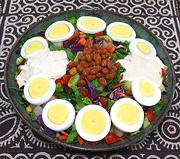

|
West African SaladGhana / Nigeria - Ghana Salad / Nigerian Salad | ||||
| Makes: Effort: Sched: DoAhead: |
2-1/2 # *** 2 hrs Most |
This fine salad is very popular in Ghana and Nigeria, countries not otherwise noted for salads. Nobody knows how this odd mixture came about, but it is adhered to pretty closely. | |||
|
3 ------- 10 8 3-1/2 3 4 2-1/2 2/3 ------- 7 ar ------- 1 2 1 ------- |
lrg --- oz oz oz oz oz oz c --- oz --- c T T --- |
Eggs, hard cooked -- Salad Potatoes (1) Tomatoes, Plum Cucumbers (2) Carrots Cabbage, red Lettuce Corn, Canned -- Garnish Baked Beans (3) The Eggs, Sliced -- Dressing (4) Mayonnaise Vinegar Dijon Mustard --------------- |
To make this salad vegetarian, just use vegetarian baked beans. It can be made with Pasta rather than Potatoes. See also Comments Do Ahead - (45 min - 15 min work + cooling time)
|